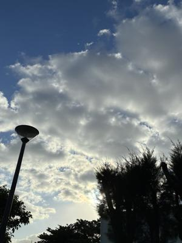
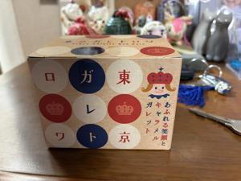
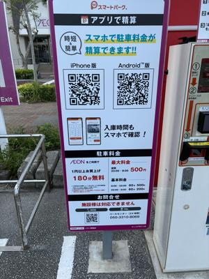

うるがいの話 ある日
最新: お土産【うるがいの話 ある日】とは 一日だけのプログです
『うるがいの話』の最新一日だけのプログで、通信料が少なく経済的だ。カニの画像をクリックすると全ての日付が載る『うるがいの話』サイトを表示します
|
|
【うるがいの話】 うるがい(ｳﾙｶﾞｲ urugai)とは、『もずくがに』の名前でとても大きくなります。 |
|---|---|
|
|
【カミマヤーの話】 猫のことを方言でマヤーといいます。カミマヤー（kamimayaa）とは、神の猫のことです。 |
|
【たながぁの音楽】 たながぁ（ﾀﾅｶﾞｰ tanagaa）とは手長えびのことで、何種類かあり大きいのは車 エビぐらいになります。 |

|
【ぶながぁの話】 ぶながぁ(ﾌﾞﾅｶﾞｰ bunagaa)とは、赤い髪の毛、赤い身体、そして身長は１ｍ２０ｃｍ ぐらい、川の蟹を食べているの目撃された。場所は沖縄県国頭郡大宜味村のと ある村僕の隣近所に住んでいる爺さんから、聞いた話です。 |
|
|
【ギーマの話】 ギーマ(giima)とは、山原の里山に咲くスズランに似た、 花を付けます。実は食べられます、 気が付くと口の周りが紫になっています。 |
2026年11月04日 (水）お土産
16:43

一時間半の研修を終えお手洗いで、鏡をみると上から２番目の
ボタンをしめてなかった。恥ずかしい、オヤジだ。東京から来
た、札幌市出身の山上（女性）さんから、ヨメさんとお二人に
とお土産を頂きました。

ガチャガチャの鍵のとき、コドモが鍵を無くすと大変だからＧ
ＰＳタグを買いました。私の補聴器にもＧＰＳ装置が、あるの
でという話から、山上さんのお父さん（故人）に補聴器を買っ
てあげた（３０万円）らしい、ただ、病気で瘦せてしまって補
聴器（型をとって埋め込むタイプ）が、ピーピーうるさい、補
聴器が合わなくなったとのこと。へー、とそのうち、あと２年
で退職します（５８歳と宣言）、北海道に戻ります。２０分程
は、その他の話をした。駐車場は、出るとき清算しないといけ
ないパーキング、１円以上の買い物をすれば、３時間無料とあ
るので薬を買った。試行錯誤しながら、何とか精算を終える。
後ろで、オジーさんがジーと私を観察している。初めてなので
やり方を見てますと言った。無視したら、どうなるのだろう
イオンのスマートパーキング（スマートパーク）を「無視」し
て出庫すると、未払いとして記録が残り、後から請求や次回以
降の利用制限などのリスクがあります。＊ 必ず精算または問
い合わせで対応する＊ことが重要です
清算する時、４桁の番号を入れるとこれで、いいですかとカメ
ラで認識したナンバーが表示されていた（認識駐車場）。
